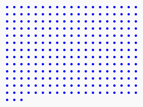
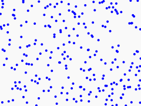
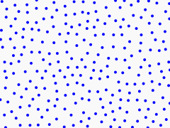
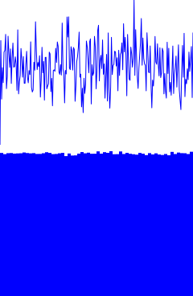
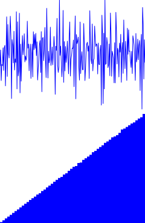
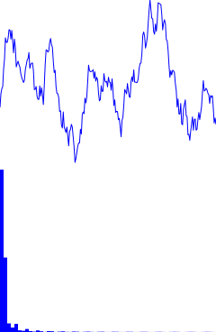
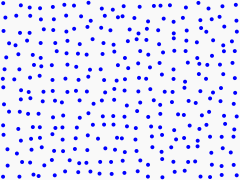
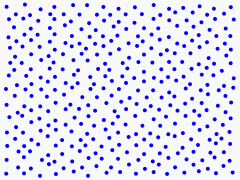
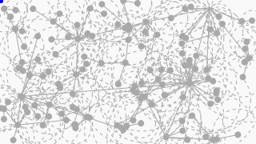
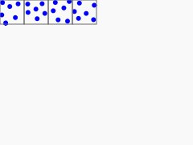

Placing Points
In videogames and computer graphics, we often want to distribute something throughout a region. It may be placing trees in a virtual forest, or your renderer simulating light rays into the world to determine pixel color. In cases like these, the most straightforward approaches have some big drawbacks! If we simply choose points in a regular grid, it will look artificial and will produce undesirable aliasing effects and Moiré patterns based on distance and viewing angle. We may then try a "dart-throwing" method and use our random number generator to pick coordinates. But this too causes problems. It will tend to produce some regions with dense clusters of points and leave large gaps between those clusters. So we need a balance between the chaos of pure randomness and the unnatural order of regular spacing, keeping the points looking evenly spaced when viewed at large scales, but not predictable on smaller scales. Distributions meeting those criteria are sometimes called blue noise. Trees distribute themselves this way due to competition for sunlight, and the receptors in our retinas (outside of the fovea and blind spot) are distributed in this way to prevent aliasing effects in our vision.



Colors of Noise
The term "blue noise" comes from signal processing and comes up in electronics and audio-related fields. They are making an analogy with visible light to characterize noisy signals based on how much different frequencies are contributing to it. In audio, we experience this as the pitch and timbre of a sound, and in light we perceive it as color. White noise is probably the most familiar "color of noise". It is so named because, like white light, it is made up of a balance of many different frequencies. When the light we see contains more of the lower frequencies of light, we perceive it as redder, and when the higher frequencies dominate, we see it as bluer. So blue noise is noise that favors higher frequences.



If it seems odd to think of frequencies and power spectra when you are trying to plant some virtual trees, you could think of it this way: within the generated forest, we want trees to be roughly evenly spaced, with no large region of our forest noticeably more dense than another, so we want to eliminate low-frequency noise. At the same time, we want minimal correlation between tree positions. We can obtain that with high-frequency noise.
Possible Approaches
For those familiar with the concept, all that stuff above talking about frequencies might suggest using a discrete Fourier transform! We could take our desired spectrum-domain behavior, generate random values in the frequency domain based on that shape, and then use the inverse Fourier transform to construct the sample data that would generate it. That is how I created the graphs above! It's great for one-dimensional values like the line heights in those images, but I haven't yet figured out how to properly extend that approach to more dimensions, and it definitely gets into heavier math than I'd like to do for this article. So we are going to look at some other methods.
The approach I am going to go into detail about here is usually referred to as Fast Poisson Disk Sampling, from the title of a SIGGRAPH paper by Robert Bridson. I'll mention a few others first, though because they are interesting in their own right.
Jittered Grid
In a way, a regular grid is actually pretty close to what we want. The points are very evenly spaced, it's just the way they are correlated that needs fixing. So what if we take the points on that grid, and randomly push them around a bit? Depending on the scale we use for that "jittering", we can tradeoff between more clumping or more grid-aligned correlations, but improving one hurts the other, and may require some cleverness in how you jitter if isotropy is a concern. It is a very fast approach, though, and may be close enough for many use cases!


Dart Throwing
We can just "throw darts" at the region and use those points. By this I mean that for each coordinate of a point, we just take a uniform random variable scaled to match the size of the region. This generates a white noise distribution with the clumpings and gapping problems as seen at the top of this article. But if we reject darts that get within some radius of other darts, the same process gives us much better results, just much slower.
Mitchell's Best Candidate
The Mitchell's Best Candidate approach is a variation of dart throwing. Instead of throwing darts one at a time and rejecting, we throw a batch of them and them keep only the bst one of the batch. By "best" here we mean farthest from all the previous darts we kept.. This can get quite slow as the number of points to distance-test against gets large. Depending on how many darts you are willing to throw at once and how slow you are willing to let it get, it does produce good results.

More exotic approaches
People have come up with many ways to do this with various advantages and disadvantages. Tile based methods make a library of small areas of blue noise that they then combine into large ones. An aperiodic tilings such as Penrose tilings can be used as the basis for the points. Points generated through other means can be relaxed into a smoother distribution.

Fast Poisson Disk Sampling
The fast Poisson disk method from Bridson's paper seems to have become the most common approach. It is uses a clever trick to make sure its points have a minimum distance between them, while still operating in linear time (in the number of points generated). And it produces high-quality results.
At a high level, the algorithm works by first picking a random seed point, then for future points, it steps at least a minimum distance away in a random direction and tests to see if that new point is not too close to one we already have. This is made efficient by dividing space into a grid that lets us quickly determine which points could be near the candidate point, and by keeping track of which points are still good for using as the basis of future ones as space fills up.
Inputs to the Algorithm
Our fast Poisson disk function will do its thing based on: the size of the area/volume to place things in, a minimum distance between the generated points, a maximum number of points to generate, and an additional tunable number, max_tries, that will make more sense later, but essentially controls how hard it works to fill the space around a generated point before it gives up on placing more near it. 30 is a typical value.
Bridson's algorithm works in any number of dimensions, but I am presenting it here in only two dimensions for simplicity's sake.
TODO: code snippet of function signature and image of the empty square ## Setting Up the Data Structures TODO: write this section TODO: code snippet of creating the grid, the active list, choosing the cell size, the point struct, and list of all points, and alongside that an image drawing the grid ## Initial point TODO: write this section TODO: code snippet for generating the point and updating the data structures, show the point in a grid space now ## The Loop TODO: write this section TODO: show the code TODO: images with legend to demonstrate the various steps and mark and explain which ones are active. Draw the discs ## Wrap up TODO: link to the github TODO: images with different settings